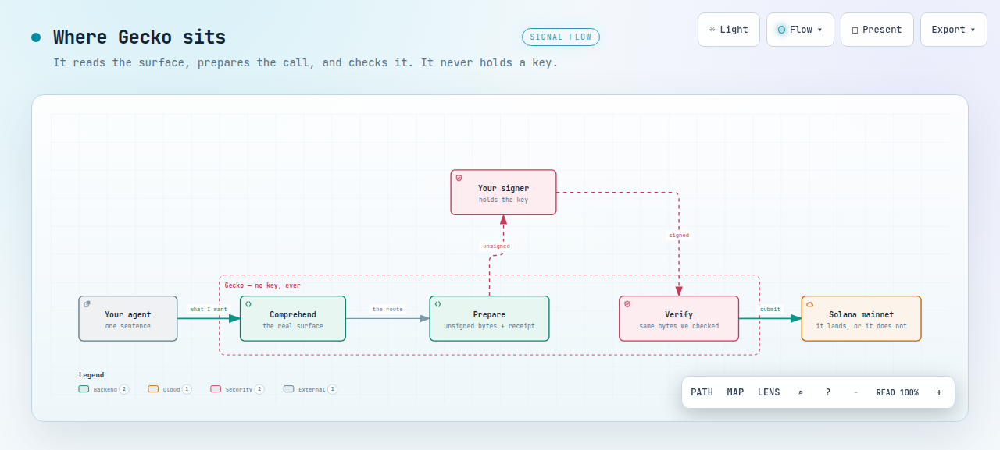

One sentence in. Gecko read the shop's real surface, worked out the wallet
was short, derived a swap nobody chose, and prepared the bytes. A separate signer signed
them. Both transactions landed on Solana mainnet.
The take
8.7s, one unedited run against the hosted MCP. Every number was read off the
wire during the recording.
Where Gecko sits

The dashed boundary is the whole product decision: comprehension and
verification sit inside it, the key sits outside.
Open the interactive version →
What is checkable
11mainnet transactions today, all predicted before signing and exact on chain
20 / 20compute predicted before signing, exact on chain, with its denominator
2design partners in conversation, neither from the waitlist
1 · 0waitlist signups · users on the app
The 30 seconds
The problem. Point an AI agent at an API and it guesses. Which call to make,
which account, what it will cost. When money moves, a guess is expensive.
What we do. Gecko makes it check first. We say what a transaction will do before
anyone signs it. And we refuse when we cannot vouch for something.
The proof. This week we ran eleven transactions on Solana mainnet. Every one, we
predicted the cost before signing, and every one was exact.
What is next. The app, and our first design partners onboarding.
Not claimed
The agent did not sign. Gecko prepared; a separate signer signed. Say "it was
signed", never imply Gecko did it.
Nothing here is gasless. The signer held the key; it did not sponsor the fee.
Eleven landed, twenty are verified. All eleven were predicted before signing
and exact on chain. Only five were written to our ledger with a recorded prediction; the
six the agent landed went through the hosted surface, which does not write it, so they
matched when read back by hand but do not join the running count.
One waitlist signup is not one lead. We do not know she is an API provider.
Design partners are not customers. Willingness to pay is unvalidated, and
neither partner is named here without asking them first.